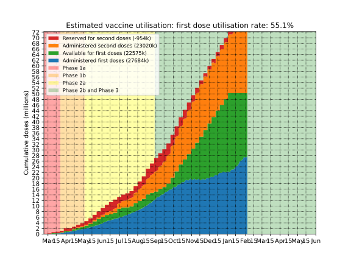

Australian COVID vaccination rollout
Daily doses
Below is a plot of daily vaccine doses administed in Australia, by state/territory. These are compared to the average rate required for 40 million doses to be administered by the end of October 160k doses per day, which is approximately what Australia is targeting. The data is smoothed using Gaussian smoothing with σ=2 days. If the federal government has not released data recently, the most recent daily rate (after smoothing) from reported data is used to project the missing data. If this is the case, this will be indicated separately on the plot.
Utilisation
Below is a plot of the estimated status of each vaccine dose in Australia. How many doses are in people's arms, in reserve, or available? This helps show whether administration of doses is keeping up with supply. Since the government has not published data to determine this exactly, this estimate is based on a number of assumptions:- That the number of Pfizer and Astrazeneca first doses administered on a given day is in proportion to the number of available doses of each type of vaccine on that day.
- That for every first dose adminsiterd a second dose is held in reserve, and administered exactly 3 weeks later for Pfizer, or 12 weeks later for AstraZeneca.
- That doses becoming available in a given week (supply data is only available at the 1-week level) become available on the Wednesday of that week.

Cumulative doses
Finally, here is a simply plot of cumulative doses in Australia over time, compared to a hypothetical rollout at a constant rate toward the end of October target of 40M doses.
Details
Source for vaccine supply: covid19data.com.au
Source for dose numbers: covidlive.com.au
Plot by Chris Billington. Contact: chrisjbillington@gmail.com
Python script for producing the plots is available on GitHub.